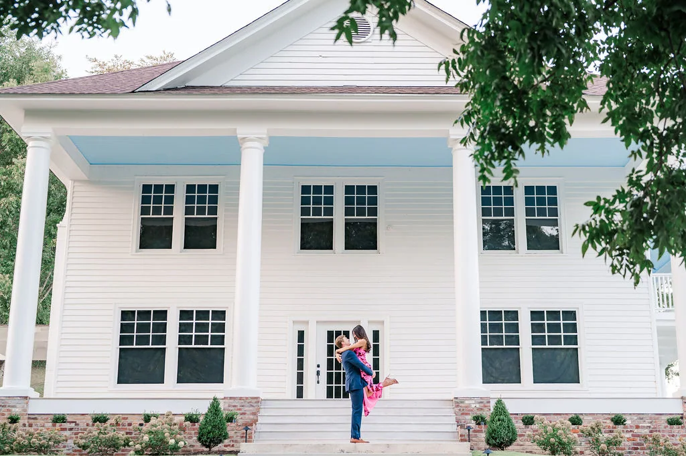

The gate
You turn off the road, and the noise stops.
Pope Creek Road, fifteen minutes out of Chattanooga. The road ends here. The gate closes behind you and the next seventy-four acres belong to your weekend, and to nobody else's.